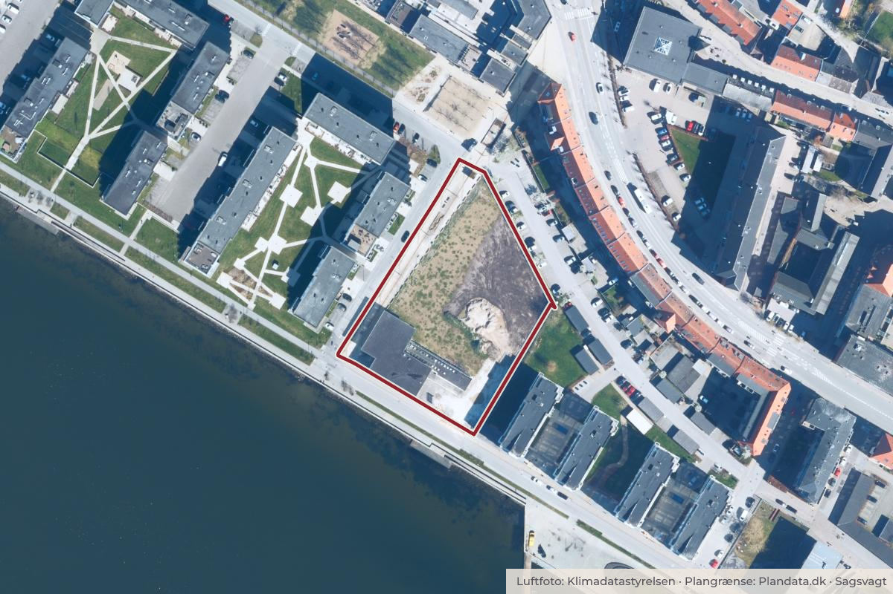

På dagsordenen 10. november, Teknik- og Miljøudvalget, Aalborg
Godkendelse af Lokalplan 1-2-131 Boliger og erhverv, Mellem Broerne, Nørresundby Midtby (2. forelæggelse)
BoligerByggeri og lokalplanerErhverv og job

Kort: © OpenStreetMap-bidragydere. Plangrænse: Plandata.dk, Aalborg Kommune.

Kort fortalt
- Forslaget
- Lokalplan 1-2-131 endeligt med nedenstående ændringer.
- På Kortbilag 2 ændres byggefelt A2 og A3.
- Pkt. 5.10 omformuleres, så der må etableres altaner, der er 1,6 m dybe på facader ud mod nabobebyggelser (østlig og vestlig lokalplangrænse).
Og 3 punkter mere i indstillingen herunder.
- Hvem
- Teknik- og Miljøudvalget, Aalborg Kommune
- Hvornår
- Tirsdag 10. november 2026
- Status
- På dagsordenen. Sagen behandles på mødet.
Er noget forkert her? Skriv til os
Hvad kan du gøre?
- Skriv til politikerne
- Udvalgets møder er lukkede, men du kan skrive til medlemmerne før mødet tirsdag 10. november 2026. Du finder dem på aalborg.dk.
Læs hele sagen Kommunens egen tekst
Indstilling
Teknik og Miljø indstiller, at byrådet godkender
• Lokalplan 1-2-131 endeligt med nedenstående ændringer.
Forslag til ændringer i lokalplan
For at skabe større afstand til eksisterende bebyggelser mod øst anbefaler Teknik og Miljø, at indsigelser vedrørende ny bebyggelses placering imødekommes ved at indskrænke byggefelt A2 og A3 med 2,75 m fra øst. Forslag til nye byggefelter kan ses i bilaget ”Kortbilag 2 – Lokalplan 1-2-131 – ændringer”.
Lokalplanens redegørelse
I afsnittet ”Lokalplanens indhold” konsekvensrettes illustrationer og visualiseringer, så det fremgår, at den nye bebyggelse inden for byggefelt A2 og A3 rykkes mod vest.
Lokalplanens bilag
• På Kortbilag 2 ændres byggefelt A2 og A3.
For at sikre gode udendørs opholdsarealer til den nye bebyggelse i hhv. gårdrummet mellem byggefelt A2 og A3 samt på altaner anbefaler Teknik og Miljø, at byggefelterne tilpasses bebyggelsens fodaftryk. Som afledt konsekvens heraf skal bestemmelser vedr. altaner og hævede terrasser tilpasses, da de i forslaget skulle opføres indenfor byggefeltet (undtaget dog altaner i byggefelt A3, hvor altaner på bebyggelsens østlige facade måtte udkrage op til 1 m ind i kantzonen).
Lokalplanens bestemmelser
• Pkt. 5.10 omformuleres, så der må etableres altaner, der er 1,6 m dybe på facader ud mod nabobebyggelser (østlig og vestlig lokalplangrænse).
• I pkt. 5.11 slettes krav om minimumsstørrelse til bræmme med beplantning rundt om hævede terrasser ved byggefelt A2 mod vest (mod Sundby Brygge). Der stilles blot krav om en bræmme med beplantning.
• Pkt. 6.5 konsekvensrettes, så det også omhandler materialer på hævede terrasser.
• Pkt. 7.4 konsekvensrettes, så der må etableres hævede terrasser i kantzonen mod vest ved byggefelt A2 (ud mod Sundby Brygge).
Det vurderes, at ændringerne ikke på væsentlig måde berører andre myndigheder eller borgere end dem, der ved indsigelsen har givet anledning til ændringerne. Der er derfor ikke behov for fornyet høring i henhold til Lov om planlægning.
Sagen blev udsat på Teknik- og Miljøudvalgets møde den 27. oktober 2026 (punkt 4). Sagen genoptages.
Læs sagsbeskrivelsen til punkt 6 (PDF)
Bilag
Kilde: Aalborg Kommune, Teknik- og Miljøudvalget, dagsorden fra mødet tirsdag 10. november 2026, punkt 6. Læs den originale sag hos kommunen.